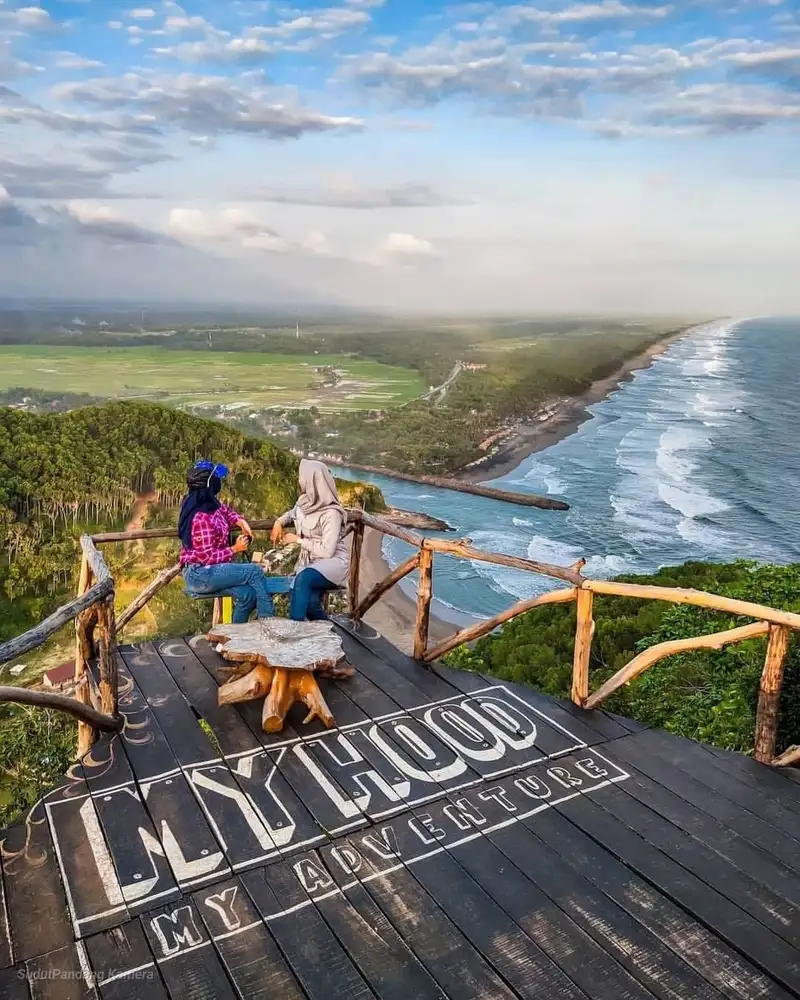
WISATA
01 · PESISIR SELATAN
Pantai Menganti
Pantai dengan tebing hijau dan panorama laut yang menjadi salah satu ikon Kebumen.
Selengkapnya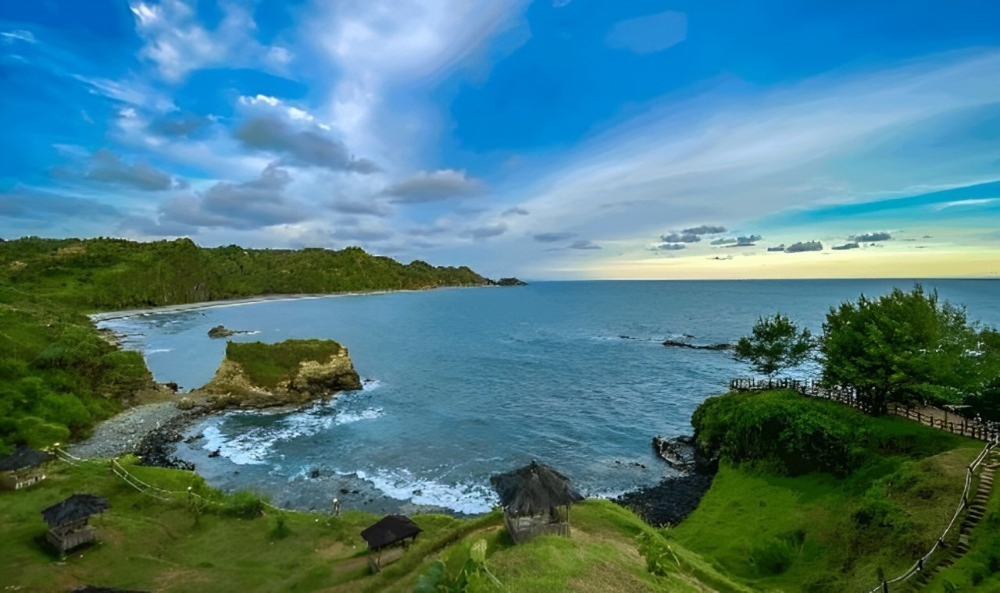
Temukan pesona pantai, budaya, kuliner, sejarah, dan cerita lokal dari kabupaten di selatan Jawa.
JELAJAHI SEKARANG
WISATAPantai dengan tebing hijau dan panorama laut yang menjadi salah satu ikon Kebumen.
SelengkapnyaRuang rekreasi pesisir dengan suasana santai dan bentang alam khas selatan Jawa.
Selengkapnya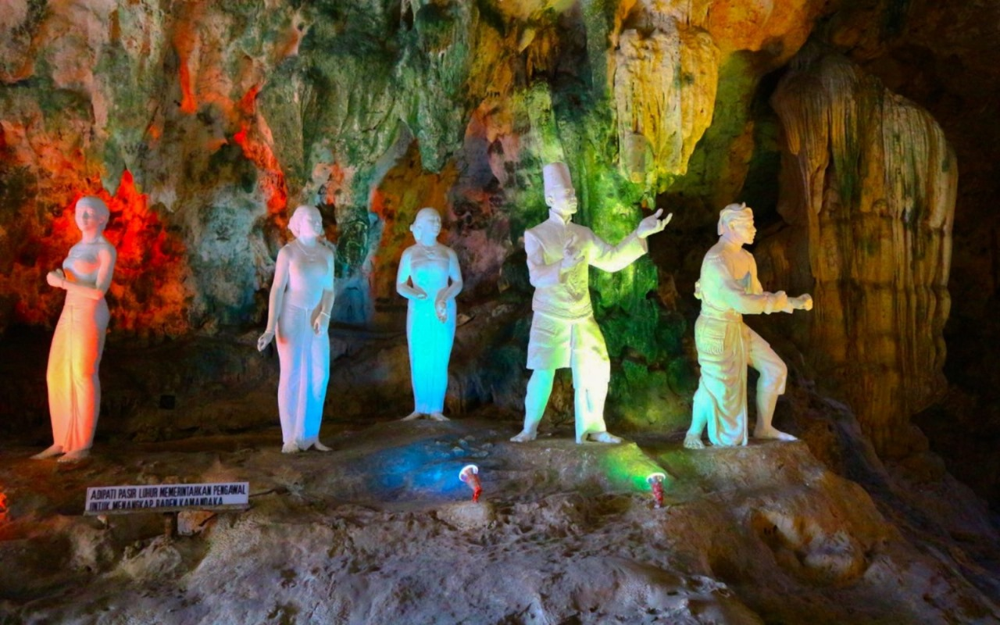
WISATAGoa wisata yang menyimpan bentukan alam dan cerita yang lekat dengan Kebumen.
Selengkapnya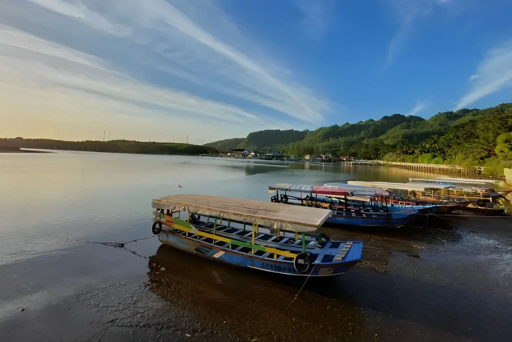
WISATAPanorama waduk dan perbukitan yang menghadirkan sisi tenang Kabupaten Kebumen.
Selengkapnya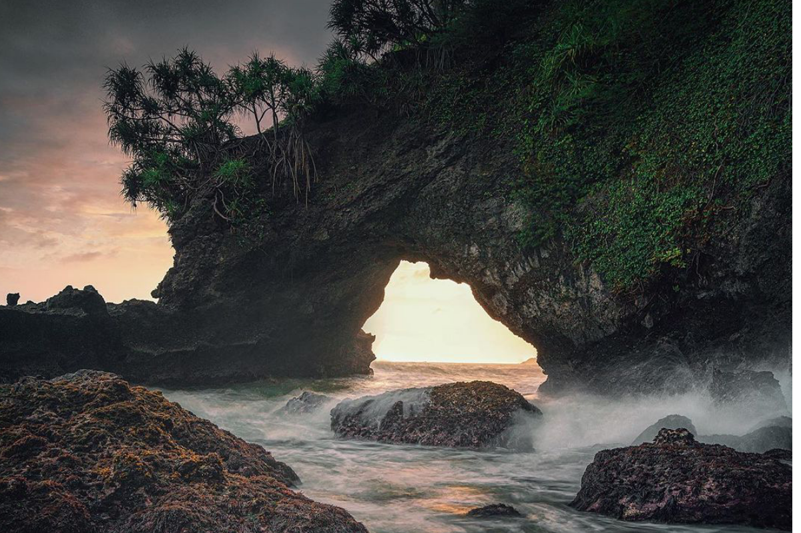
WISATAKenali pantai dengan bentang karang khas dan cerita masyarakat pesisir.
Selengkapnya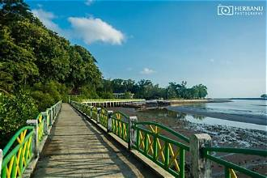
WISATASuasana muara, perahu nelayan, dan kehidupan pesisir di kawasan Ayah.
Selengkapnya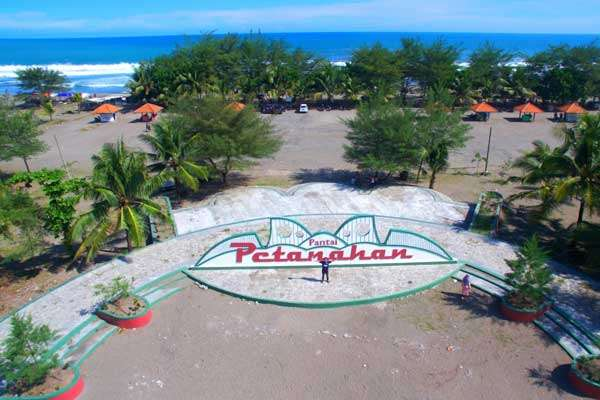
WISATAHamparan pasir dan cakrawala terbuka yang lekat dengan kehidupan pesisir.
Selengkapnya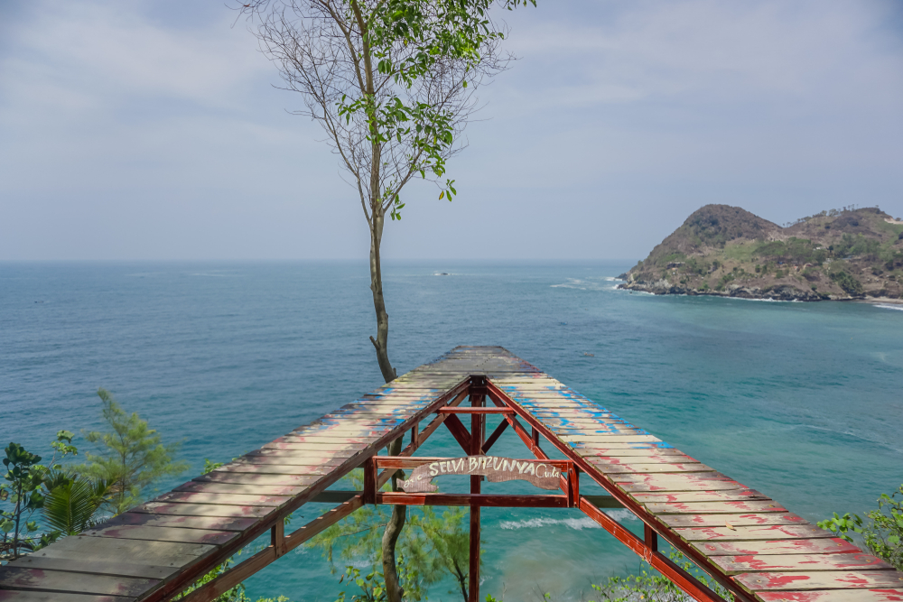
WISATATitik pandang untuk menikmati laut lepas dan bentang perbukitan pesisir.
Selengkapnya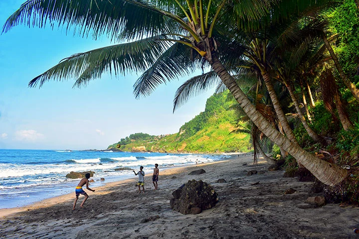
WISATAPantai bernuansa alami dengan lingkungan hijau dan lanskap pesisir yang tenang.
Selengkapnya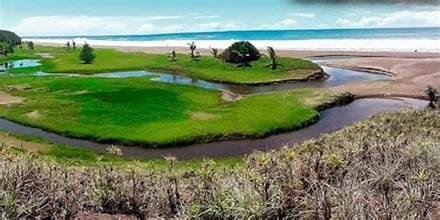
WISATAPantai dengan suasana pesisir yang tenang dan panorama alam khas selatan Kebumen.
Selengkapnya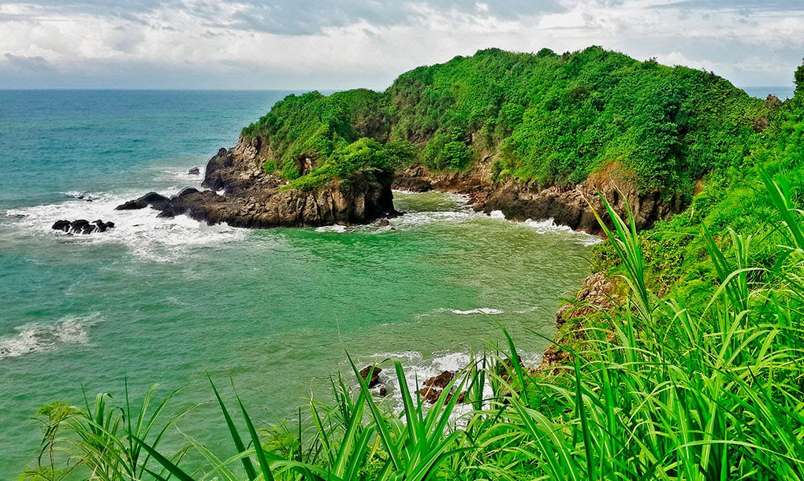
WISATALanskap pantai dan batu karang yang menghadirkan karakter khas pesisir Kebumen.
Selengkapnya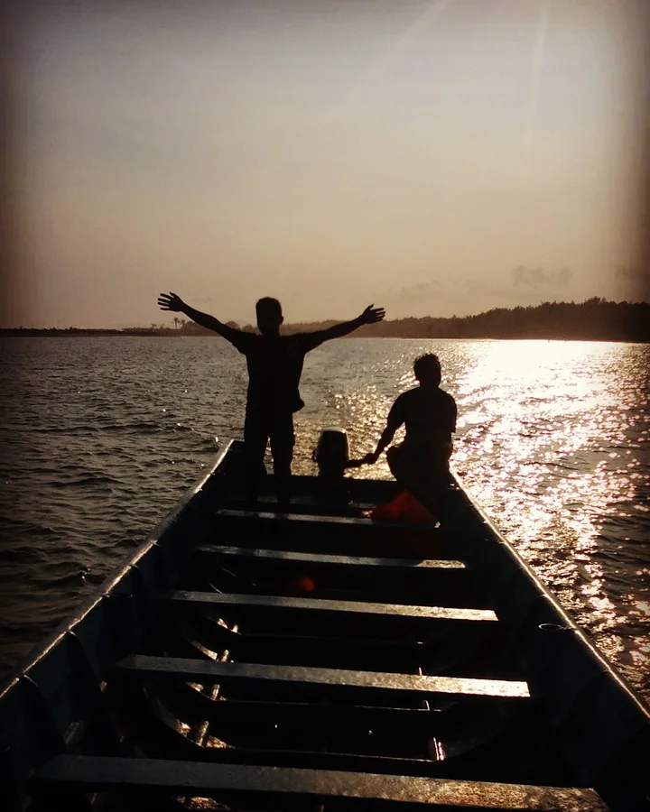
WISATASalah satu kawasan pesisir Kebumen dengan panorama laut selatan yang menarik untuk dijelajahi.
Selengkapnya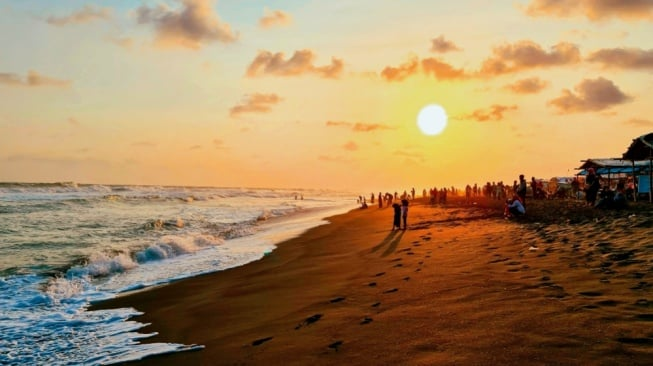
WISATAKawasan pantai selatan dengan hamparan pesisir dan suasana terbuka yang khas.
Selengkapnya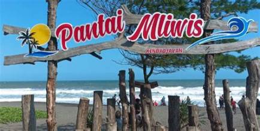
WISATADestinasi pesisir dengan suasana santai dan pemandangan laut selatan Kebumen.
Selengkapnya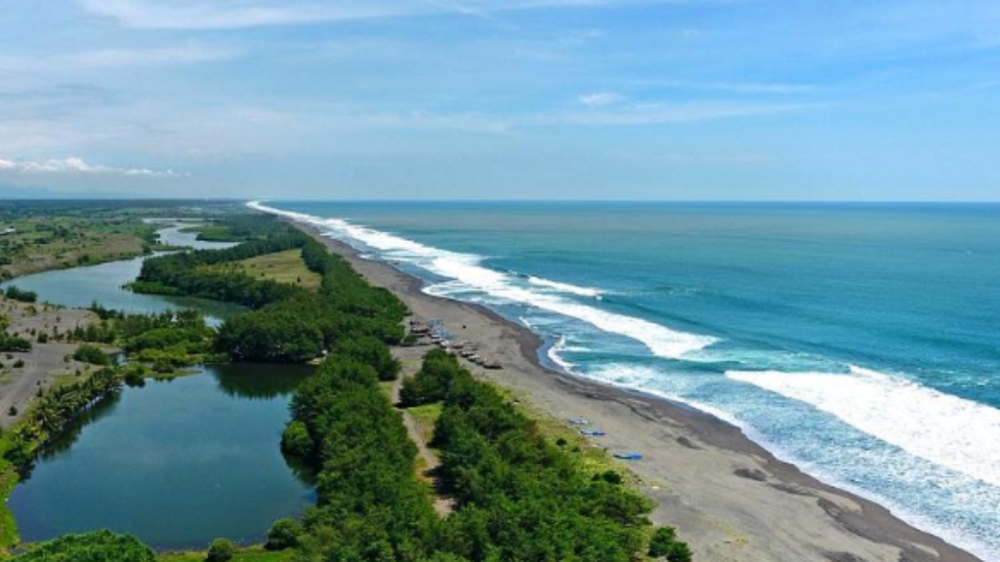
WISATAPerpaduan kawasan pantai dan laguna yang menjadi salah satu lanskap menarik di pesisir Kebumen.
Selengkapnya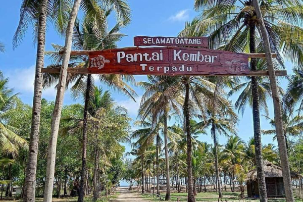
WISATAKawasan wisata pesisir dengan panorama laut dan suasana yang cocok untuk menikmati alam.
Selengkapnya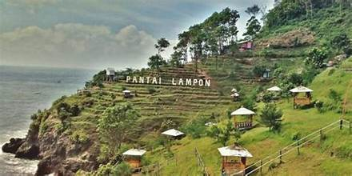
WISATAKawasan pesisir dengan perpaduan bukit, batu karang, dan panorama laut selatan.
Selengkapnya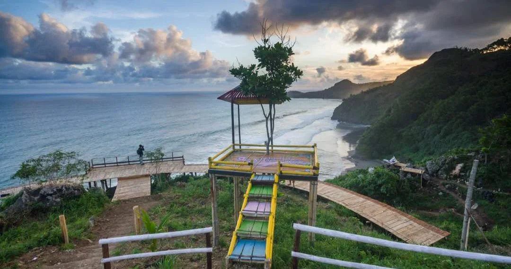
WISATAPantai dengan karakter tebing dan panorama laut yang menarik untuk dinikmati dari kawasan pesisir.
Selengkapnya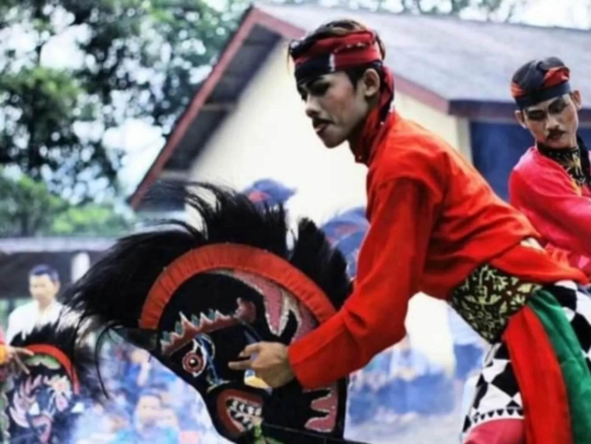
BUDAYASeni pertunjukan tradisional yang menjadi bagian dari identitas budaya Kebumen.
Selengkapnya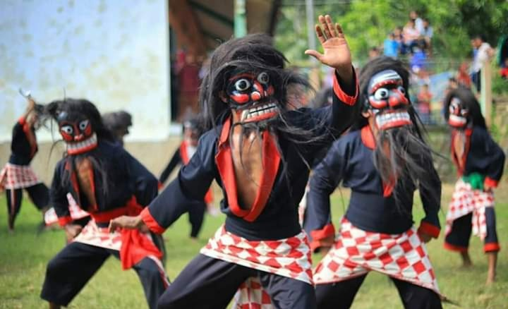
BUDAYAGerak tari yang terinspirasi dari kehidupan burung lawet dan sejarah daerah.
Selengkapnya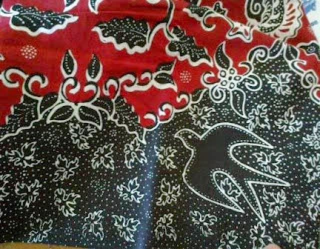
BUDAYAMotif dan kerajinan batik yang merekam karakter serta kekayaan visual daerah.
Selengkapnya BUDAYA
BUDAYA
Kesenian rakyat dengan gerak, musik, dan suasana pertunjukan yang khas.
Selengkapnya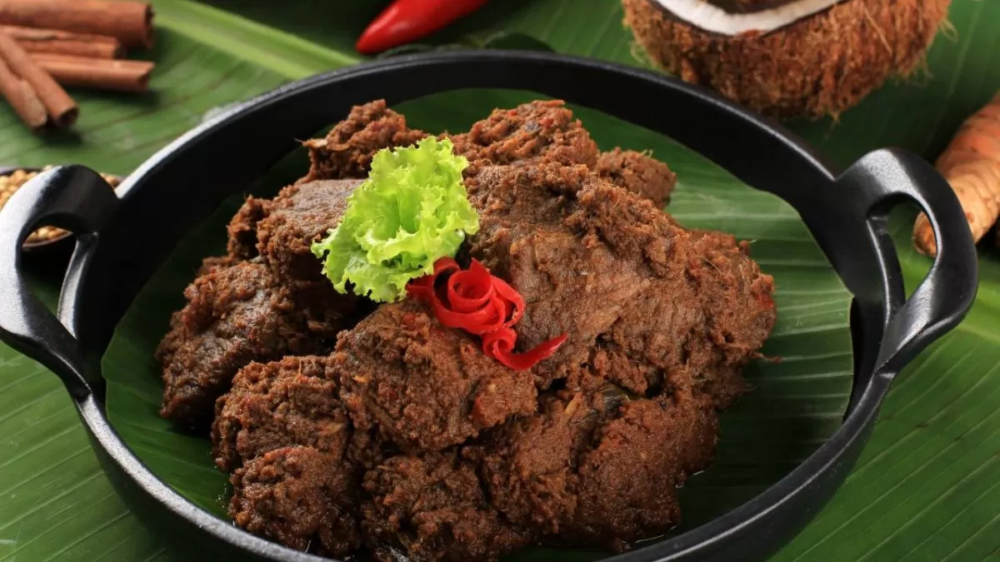
KULINERSate khas Ambal dengan bumbu yang menjadi salah satu rasa paling dikenal dari Kebumen.
Selengkapnya KULINER
KULINER
Camilan berbahan singkong yang sederhana, renyah, dan lekat dengan cerita kuliner Kebumen.
Selengkapnya KULINER
KULINER
Sajian tradisional yang menjadi bagian dari keseharian dan identitas rasa masyarakat Kebumen.
SelengkapnyaPanganan manis tradisional yang masih dibuat dan diwariskan oleh perajin lokal.
Selengkapnya SEJARAH & ALAM
SEJARAH & ALAM
Bangunan bersejarah di Gombong yang menjadi salah satu penanda perjalanan masa lalu Kebumen.
Selengkapnya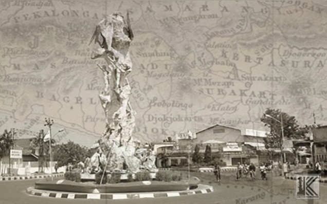
SEJARAH & ALAMPotongan sejarah Panjer dan perjalanan terbentuknya Kabupaten Kebumen dari masa ke masa.
Selengkapnya SEJARAH & ALAM
SEJARAH & ALAM
Bentang alam yang menghubungkan warisan geologi, lingkungan, dan kehidupan masyarakat.
SelengkapnyaMelihat Kebumen sebagai ruang hidup yang terus tumbuh tanpa meninggalkan cerita masa lalunya.
Selengkapnya
Dari Ebleg, Tari Lawet, Cepetan Alas, hingga batik— kenali tradisi yang membuat Kebumen punya karakter sendiri.
LIHAT BUDAYAPerjalanan Kebumen tidak hanya terlihat dari tempat wisata. Ada benteng, jejak kota lama, geopark, dan kisah masyarakat yang membentuk wajah daerah hari ini.
KENALI SEJARAH KEBUMEN
JEJAK KOTA LAMA
Gunakan peta untuk melihat posisi Kabupaten Kebumen dan merencanakan destinasi yang ingin kamu kunjungi.
Buka di Google Maps